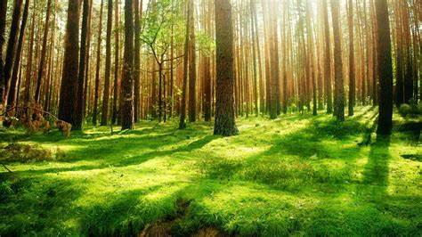

OUR cONTEST
Images forest
.jpg) A trail through a sunlit Pacific Northwest forest. Magical fairytale forest.
Magical fairytale forest. Coniferous forest covered of green moss
A trail through a sunlit Pacific Northwest forest. Magical fairytale forest.
Magical fairytale forest. Coniferous forest covered of green moss
billion years ago. So, the origin of life is probably the origin of evolution. Life is resourceful and entrepreneurial. It takes advantage and it changes the chemistry of itssurroundings. Life is a fantastically complex system, the emergence of which remains the greatest mystery in science.Long-term changes in the composition of theatmosphere and oceans are intimately linked to
 A trail through a sunlit Pacific Northwest forest. Magical fairytale forest.
Magical fairytale forest. Coniferous forest covered of green moss
Forestry Images is a joint project of The University of Georgia - Warnell School of Forestry and Natural Resources and College of Agricultural and Environmental Sciences, Center for Invasive